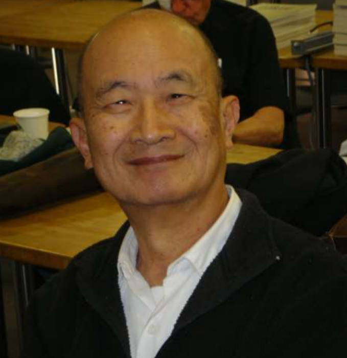
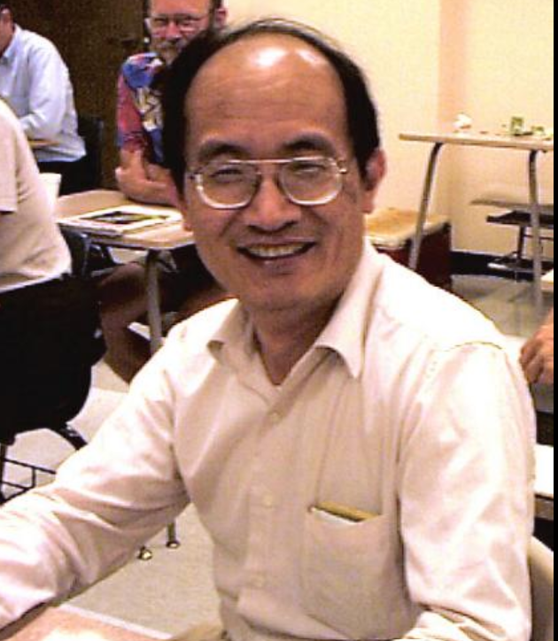
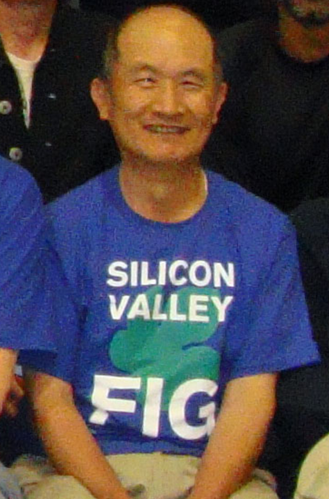

Dr. Chen Hanson Ting
August 29, 1939 - May 30, 2022

Dr. Ting played a profound role in SVFIG and the Forth community

A Request from Taiwan FIG
On August 20 & 21 Taiwan FIG will hold a seminar in memory of
Dr. Ting in the conference hall of the Institute of Physics,
Nangang Academia Sinica.
A Request from Taiwan FIG
- Remembrance and Inheritance is the theme of this seminar.
- Let us follow the example of Dr. Ting,
continue the research and promotion of Forth, and leave some written records.
- I'll edit together the video from this session + any video you get to me soon
into a 15 minute montage to be presented at the event.
- Articles from overseas can be included in the written Proceedings,
but not the agenda due to time constraints.
What Dr. Ting meant to me
- His talks kicked off most of our monthly meetings.
- His interests were boundless, from chemistry to genomes, fractals to FPGAs, music to microcontrollers.
- How taught me so much: the wisdom of FOR..NEXT, ESP32, and the EForth philosophy.
- He made Maker Faire happen.
- He fed us on Forth Day!